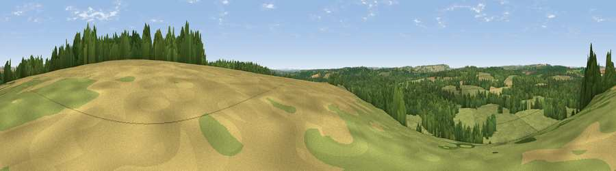

Viewpoint near Mottisfont
#37351 in England · top 45% of its area beats it · near MottisfontWhere it is
The exact computed spot (SU 33925 27325). Click the marker for map links.
The view, rendered

A 360° render of this exact spot computed from the terrain model, tree cover and land cover — summer colours, afternoon light, calibrated against photographs of famous viewpoints. Real trees, hedges and buildings will differ in detail.
The panorama
Grey silhouette: terrain skyline in each direction (720 bearings, Earth curvature and refraction included). Dashed green: skyline with trees (+15 m) and buildings (+8 m) as obstacles. Blue strip: how far the ground is visible on each bearing.
Where the view opens
Wedge length = distance to the farthest visible ground on that bearing (vegetation-aware). Rings at 10, 25 and 50 km.
What fills the view
53% grassland · 35% woodland · 8% cropland · 4% built-up
Angular shares of the visible panorama (visual magnitude), not map area. Landscape diversity 0.45 (0–1 Shannon).
Key numbers
More beautiful places nearby
The staircase of upgrades: each row has a higher view potential than everything closer. Driving times are estimates from straight-line distance, calibrated against real road routing — check an actual route before setting out.
| Place | Direction | Drive | Score |
|---|---|---|---|
| Viewpoint near Mottisfont | NNE · 1 km | ~3 min | 37.2 |
| Viewpoint near King's Somborne | ENE · 5 km | ~11 min | 44.5 |
| Viewpoint near King's Somborne | ENE · 6 km | ~13 min | 60.8 |
| Viewpoint near Stockbridge | NNE · 9 km | ~18 min | 63.3 |
| Viewpoint near Bulford | NW · 21 km | ~35 min | 70.3 |
| Beacon Hill | E · 27 km | ~43 min | 71.7 |
| Viewpoint near Meonstoke | ESE · 31 km | ~48 min | 74.8 |
| Beacon Hill | NNE · 32 km | ~50 min | 76.7 |
51.04428, -1.51746 · source: screening · position refined by local search. Computed location — check access rights before visiting.